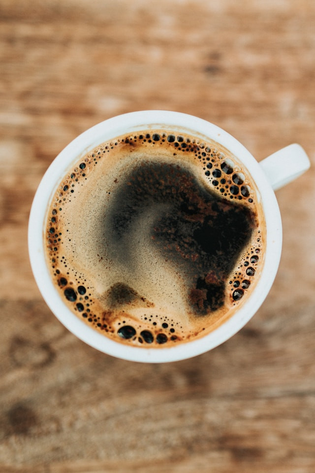

755 Lake Bonavista Dr SE Unit #191, Calgary, AB T2J 0N3
Open hour
MON-SAT 8:30am - 5:30pm
Your local coffee shop
Gourmet Cup Lake Bonavista is a cozy local coffee shop run by regulars who are passionate about coffee. They serve high-quality coffee made from carefully selected beans and expertly brewed espresso. With a warm atmosphere and friendly service, it's the perfect spot for coffee lovers to relax and enjoy a great cup of coffee.

Brewed Coffee
Black coffee. you can add cream and sugar
Latte
Espresso shot with steamed milk. add some flavor shot with it
Mocha
Espresso with melted chocolate and steamed milk with.
Menu Detail
Americano
The Americano is a classic coffee beverage that originated in America. It's made by combining espresso shots with hot water, creating a drink that's similar in strength to drip coffee but with a distinct flavor profile.
Latte
A latte, short for caffè latte, is a popular coffee beverage that originated in Italy. It's made with a shot or two of espresso and steamed milk, topped with a small amount of frothed milk. The latte is known for its creamy texture and smooth taste. The steamed milk helps to mellow out the strong flavor of the espresso, resulting in a well-balanced and satisfying drink.
Mocha
A mocha is a delightful coffee beverage that combines espresso, steamed milk, chocolate syrup or cocoa powder, and optionally topped with whipped cream. It's a rich and indulgent drink with a balanced blend of coffee and chocolate flavors. To make a mocha, a shot or two of espresso is mixed with steamed milk and chocolate syrup or cocoa powder, creating a smooth and creamy base. The chocolate adds a delicious sweetness and depth of flavor to the coffee, making it a favorite choice for those with a sweet tooth.
Coffee Shop Music
Coffee and music make a harmonious combination. The music played in coffee shops plays a significant role in creating a relaxed and enjoyable atmosphere for customers. It provides stress relief and relaxation while enhancing the ambiance of the coffee shop.